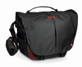

器材库 > 摄影包 > MB PL-BM-30

详细规格
产品类型
单肩挎包
发布日期
2017-05-23
容量
搭载了70-200/2.8长焦镜头的单反相机及额外3支镜头和一个手持稳定器（如大疆OSMO等同类产品）及一台最大15寸的笔记本电脑等附件。
外部尺寸
46×19×33cm
内部尺寸
42×12×31cm
笔记本电脑隔层
38×4×30cm
颜色
黑色
材质
尼龙, RipStop, 化纤
重量
1200g
防雨罩
有
匿名网友2017-10-17 02:374.33 分
操作性 5.00功能性 4.50美观性 5.00趣味性 4.50耐用性 5.00性价比 2.00
产品图 / 样片
MB PL-BM-30
评测 / 相关文章
该产品暂无存档的评测文章